Sistema masa resorte amortiguador#
Un sistema masa resorte amortiguador consta de tres componentes esenciales
Componente |
Símbolo |
Función |
Ejemplo en el mundo real |
|---|---|---|---|
Masa |
\(m\) |
Proporciona inercia |
Carrocería de un auto en suspensión |
Resorte |
\(k\) |
Proporciona fuerza restauradora |
Resorte de un amortiguador |
Amortiguador |
\(c\) |
Disipa energía |
Fluido del amortiguador |
Modelo Matemático#
Ecuación diferencial gobernante#
El sistema se rige por la segunda Ley de Newton
donde
\(x(t)\): Desplazamiento desde la posición de equilibrio [m].
\(\dot{x}(t)\): Velocidad [m/s].
\(\ddot{x}(t)\): Aceleración [m/s\(^2\)].
\(m\): Masa [kg].
\(c\): Coeficiente de amortiguamiento [N\(\cdot\)s/m].
\(k\): Constante del resorte [N/m].
Parámetros adimensionales#
Frecuencia Natural
Razón de Amortiguamiento
Frecuencia Natural Amortiguada
Ecuación característica del sistema#
Al sustituir \(x(t) = e^{\lambda t}\) se obtiene:
cuyas raíces están dadas como sigue
Tipos de solución según la razón de amortiguamiento#
Sistema no amortiguado (\(\zeta = 0\))#
Oscilación sinusoidal pura.
Amplitud constante.
Sin disipación de energía.
Sistema subamortiguado (\(0 < \zeta < 1\))#
Movimiento oscilatorio.
Amplitud con decaimiento exponencial.
Caso más común en aplicaciones prácticas.
Sistema con amortiguamiento crítico (\(\zeta = 1\))#
Regreso más rápido al equilibrio sin oscilación.
Amortiguamiento mínimo para evitar el sobrepaso (overshoot).
Sistema sobreamortiguado (\(\zeta > 1\))#
Movimiento no oscilatorio.
Regreso al equilibrio más lento que en el amortiguamiento crítico.
Interpretación Física#
Balance de Energía#
Energía Total = Energía Cinética + Energía Potencial + Energía Disipada
El amortiguador convierte continuamente la energía mecánica en calor.
Componentes de Fuerza#
Fuerza de inercia: \(F_m = m\ddot{x}\).
Fuerza de amortiguamiento: \(F_c = c\dot{x}\) (se opone al movimiento).
Fuerza del resorte: \(F_k = kx\) (fuerza restauradora).
Ideas clave
La razón de amortiguamiento \(\zeta\) determina el comportamiento del sistema.
El amortiguamiento crítico proporciona la respuesta no oscilatoria más rápida.
La mayoría de los sistemas mecánicos son subamortiguados (\(0.05 < \zeta < 0.7\)).
El método del decremento logarítmico permite determinar \(\zeta\) experimentalmente a partir del decaimiento de la oscilación.
Ejemplo de Parámetros de Simulación#
Parámetro |
Valor Típico |
Unidad |
|---|---|---|
Masa (\(m\)) |
1.0 |
kg |
Constante del Resorte (\(k\)) |
10.0 |
N/m |
Coeficiente de Amortiguamiento (\(c\)) |
0.5, 2.0, 5.0 |
\(\text{N}\cdot\text{s/m}\) |
Desplazamiento Inicial (\(x_0\)) |
1.0 |
m |
Velocidad Inicial (\(v_0\)) |
0.0 |
m/s |
import numpy as np
import matplotlib.pyplot as plt
import sympy
from scipy.optimize import curve_fit
from scipy.integrate import solve_ivp
from scipy.stats import linregress
from scipy.signal import find_peaks
from scipy.optimize import minimize_scalar
from scipy.optimize import minimize, differential_evolution
from scipy.optimize import differential_evolution
from sklearn.metrics import mean_squared_error
from scipy.special import gamma
from scipy.interpolate import interp1d
from matplotlib.widgets import Slider, Button
import ipywidgets as widgets
from IPython.display import display, clear_output
import warnings
import pandas as pd
# Suprimir advertencias menores de integración durante los bucles de optimización
warnings.filterwarnings("ignore")
# Configurar el estilo de graficación para una mejor visualización
plt.style.use('seaborn-v0_8-darkgrid')
# ==============================================================================
# Modelo de Masa-Resorte Amortiguado Fraccionario Conformable
# ==============================================================================
plt.style.use('seaborn-v0_8-darkgrid')
# parámetros físicos
m = 1.0 # masa (kg)
k = 10.0 # coeficiente del resorte (N/m)
x1_0 = 1.0 # desplazamiento inicial (m)
x2_0 = 0.0 # velocidad inicial (m/s)
c = 6.0 # (0.5, 6.322, 7.0) coeficiente de amortiguamiento (N*s/m) (puede y será variado para observar subamortiguamiento, amortiguamiento crítico y sobreamortiguamiento)
######### selección del amortiguamiento para el modelo
# características del sistema
# CORRECCIÓN: Se renombró nat_freq a omega_n para coincidir con las sentencias de impresión posteriores
omega_n = np.sqrt(k/m) # frecuencia natural (rad/s)
zeta = c/(2*np.sqrt(m*k)) # razón de amortiguamiento
# características del amortiguamiento
print(f"natrual frequency (ω_n): {omega_n:.3f} rads/s")
print(f"damping ratio (ζ): {zeta:.3f}")
print(f"Damping regime: {'Underdamped' if zeta < 1 else 'Critically damped' if zeta == 1 else 'Overdamped'}")
# parámetros de tiempo
t_0 = 0.0
t_end = 15
t_points = 100 * t_end
t_eval = np.linspace(t_0, t_end, t_points)
# El sistema se describe mediante: m*x'' + c*x' + k*x = 0
# donde: x'' = aceleración, x' = velocidad, x = posición
def damped_spring_mass_ode(t, y):
# Función EDO para el oscilador armónico amortiguado
# t : float
# Variable de tiempo (no utilizada explícitamente en el sistema autónomo)
# y : array_like Vector de estado [posición, velocidad]
# retorna
# dydt : list Derivadas [velocidad, aceleración]
x1, x2 = y # x1 = posición, x2 = velocidad
dx1dt = x2
dx2dt = (-c*x2 - k*x1) / m
return [dx1dt, dx2dt]
# solución numérica empleando solve_ivp
sol = solve_ivp(damped_spring_mass_ode, [t_0, t_end], [x1_0, x2_0], t_eval = t_eval, method='RK45', rtol= 1e-8)
# Solución Numérica: Se emplea solve_ivp con el método de Runge-Kutta-Fehlberg para resolver las ecuaciones exactas del péndulo no lineal.
x1_numerical = sol.y[0] # posición
x2_numerical = sol.y[1] # velocidad
t_numerical = sol.t
# solución analítica solo para fines comparativos
if zeta < 1:
# solución subamortiguada: x(t) = e^(ζω_n t) * [A*cos(ω_n t) + B*sin(ω_n t)]
# CORRECCIÓN: Se renombró nat_freqdamp a omega_d
omega_d = omega_n * np.sqrt(1 - zeta**2) # frecuencia natural amortiguada
# coeficientes determinados a partir de las condiciones iniciales
A = x1_0 # a partir de x(0) = x1_0
# CORRECCIÓN: Se actualizaron las variables nat_freq y nat_freqdamp aquí
B = (x2_0 + zeta*omega_n*x1_0) / omega_d # x'(0) = x2_0
# solución analítica de x1
x1_analytical = np.exp(-zeta*omega_n*t_numerical) * \
(A*np.cos(omega_d*t_numerical) + B*np.sin(omega_d*t_numerical))
# solución analítica de x2 para la derivada de la posición (velocidad)
x2_analytical = np.exp(-zeta*omega_n*t_numerical) * \
(-A*(zeta*omega_n*np.cos(omega_d*t_numerical) + omega_d*np.sin(omega_d*t_numerical)) + \
B*(omega_d*np.cos(omega_d*t_numerical) - zeta*omega_n*np.sin(omega_d*t_numerical)))
print(f"Damped natural frequency (ω_d): {omega_d:.3f} rad/s")
print(f"Exponential decay rate: {zeta*omega_n:.3f} 1/s")
print(f"Period of damped oscillations: {2*np.pi/omega_d:.3f} s")
# Creación de la figura con subgráficos
fig, axes = plt.subplots(2, 2, figsize=(14, 10))
fig.suptitle(f'Damped Harmonic Oscillator (ζ = {zeta:.3f}, m = {m} kg, k = {k} N/m)',
fontsize=16, fontweight='bold')
# Gráfico 1: Desplazamiento vs. Tiempo (numérico vs. analítico)
ax1 = axes[0, 0]
ax1.plot(t_numerical, x1_numerical, 'b-', linewidth=2, label='Numerical (solve_ivp)')
if zeta < 1:
ax1.plot(t_numerical, x1_analytical, 'r--', linewidth=1.5, alpha=0.7, label='Analytical')
ax1.set_xlabel('Time (s)', fontsize=12)
ax1.set_ylabel('Displacement (m)', fontsize=12)
ax1.set_title('Displacement vs Time', fontsize=14)
ax1.grid(True, alpha=0.3)
ax1.legend(loc='upper right')
ax1.set_xlim([t_0, t_end])
# Gráfico 2: Velocidad vs. Tiempo
ax2 = axes[0, 1]
ax2.plot(t_numerical, x2_numerical, 'g-', linewidth=2, label='Numerical')
if zeta < 1:
ax2.plot(t_numerical, x2_analytical, 'r--', linewidth=1.5, alpha=0.7, label='Analytical')
ax2.set_xlabel('Time (s)', fontsize=12)
ax2.set_ylabel('Velocity (m/s)', fontsize=12)
ax2.set_title('Velocity vs Time', fontsize=14)
ax2.grid(True, alpha=0.3)
ax2.legend(loc='upper right')
ax2.set_xlim([t_0, t_end])
# Gráfico 3: Retrato de fase (Velocidad vs. Desplazamiento)
ax3 = axes[1, 0]
# Codificación de color por tiempo para una mejor visualización
scatter = ax3.scatter(x1_numerical, x2_numerical, c=t_numerical, cmap='viridis',
s=10, alpha=0.6, edgecolors='none')
ax3.plot(x1_numerical, x2_numerical, 'b-', linewidth=0.5, alpha=0.5)
ax3.set_xlabel('Displacement (m)', fontsize=12)
ax3.set_ylabel('Velocity (m/s)', fontsize=12)
ax3.set_title('Phase Portrait (Velocity vs Displacement)', fontsize=14)
ax3.grid(True, alpha=0.3)
ax3.axhline(y=0, color='k', linestyle='-', alpha=0.3)
ax3.axvline(x=0, color='k', linestyle='-', alpha=0.3)
# Agregar barra de colores para el tiempo
cbar = plt.colorbar(scatter, ax=ax3)
cbar.set_label('Time (s)', fontsize=10)
# Gráfico 4: Análisis de error (si existe solución analítica) #####
ax4 = axes[1, 1]
if zeta < 1:
# Cálculo del error absoluto entre las soluciones numérica y analítica
error_position = np.abs(x1_numerical - x1_analytical)
error_velocity = np.abs(x2_numerical - x2_analytical)
ax4.semilogy(t_numerical, error_position, 'b-', linewidth=1.5, label='Position Error')
ax4.semilogy(t_numerical, error_velocity, 'r-', linewidth=1.5, label='Velocity Error')
ax4.set_xlabel('Time (s)', fontsize=12)
ax4.set_ylabel('Absolute Error (log scale)', fontsize=12)
ax4.set_title('Numerical Error Analysis', fontsize=14)
ax4.grid(True, alpha=0.3)
ax4.legend(loc='upper right')
ax4.set_xlim([t_0, t_end])
# Impresión de estadísticas de error
print(f"\nError Statistics:")
print(f"Max position error: {np.max(error_position):.2e} m")
print(f"Max velocity error: {np.max(error_velocity):.2e} m/s")
print(f"RMS position error: {np.sqrt(np.mean(error_position**2)):.2e} m")
print(f"RMS velocity error: {np.sqrt(np.mean(error_velocity**2)):.2e} m/s")
else:
# Si no es subamortiguado, se muestra el gráfico de aceleración en su lugar
acceleration = (-c*x2_numerical - k*x1_numerical) / m
ax4.plot(t_numerical, acceleration, 'purple', linewidth=2)
ax4.set_xlabel('Time (s)', fontsize=12)
ax4.set_ylabel('Acceleration (m/s²)', fontsize=12)
ax4.set_title('Acceleration vs Time', fontsize=14)
ax4.grid(True, alpha=0.3)
ax4.set_xlim([t_0, t_end])
plt.tight_layout()
plt.show()
# Gráfico individual adicional para una mejor visualización de las oscilaciones
fig2, ax2_single = plt.subplots(figsize=(12, 6))
if zeta < 1:
# Gráfico con envolvente para el caso subamortiguado
# CORRECCIÓN: Asegurar el uso de omega_n, lo cual es correcto ahora
envelope = np.exp(-zeta*omega_n*t_numerical) * np.sqrt(A**2 + B**2)
ax2_single.plot(t_numerical, x1_numerical, 'b-', linewidth=2, label='Numerical Solution')
ax2_single.plot(t_numerical, envelope, 'r--', linewidth=1, alpha=0.7, label='Envelope: $e^{-ζω_nt}$')
ax2_single.plot(t_numerical, -envelope, 'r--', linewidth=1, alpha=0.7)
ax2_single.fill_between(t_numerical, envelope, -envelope, color='red', alpha=0.1)
else:
ax2_single.plot(t_numerical, x1_numerical, 'b-', linewidth=2, label='Numerical Solution')
ax2_single.set_xlabel('Time (s)', fontsize=12)
ax2_single.set_ylabel('Displacement (m)', fontsize=12)
ax2_single.set_title(f'Damped Harmonic Oscillator - Displacement (ζ = {zeta:.3f})', fontsize=14)
ax2_single.grid(True, alpha=0.3)
ax2_single.legend(loc='upper right')
ax2_single.set_xlim([t_0, t_end])
plt.tight_layout()
plt.show()
# Impresión de las características del sistema con formato
print("\n" + "="*60)
print("SYSTEM CHARACTERISTICS SUMMARY")
print("="*60)
print(f"Mass (m): {m} kg")
print(f"Spring constant (k): {k} N/m")
print(f"Damping coefficient (c): {c} N·s/m")
print(f"Natural frequency (ω_n): {omega_n:.3f} rad/s (f_n = {omega_n/(2*np.pi):.3f} Hz)")
print(f"Damping ratio (ζ): {zeta:.3f}")
print(f"Initial displacement: {x1_0} m")
print(f"Initial velocity: {x2_0} m/s")
if zeta < 1:
print(f"\nUNDERDAMPED OSCILLATION PARAMETERS:")
print(f"Damped natural frequency (ω_d): {omega_d:.3f} rad/s")
print(f"Damped period (T_d): {2*np.pi/omega_d:.3f} s")
print(f"Exponential decay rate (σ): {zeta*omega_n:.3f} 1/s")
print(f"Decay time constant (τ): {1/(zeta*omega_n):.3f} s")
print(f"Quality factor (Q): {1/(2*zeta):.3f}")
natrual frequency (ω_n): 3.162 rads/s
damping ratio (ζ): 0.949
Damping regime: Underdamped
Damped natural frequency (ω_d): 1.000 rad/s
Exponential decay rate: 3.000 1/s
Period of damped oscillations: 6.283 s
Error Statistics:
Max position error: 3.00e-07 m
Max velocity error: 5.89e-07 m/s
RMS position error: 9.09e-08 m
RMS velocity error: 2.32e-07 m/s
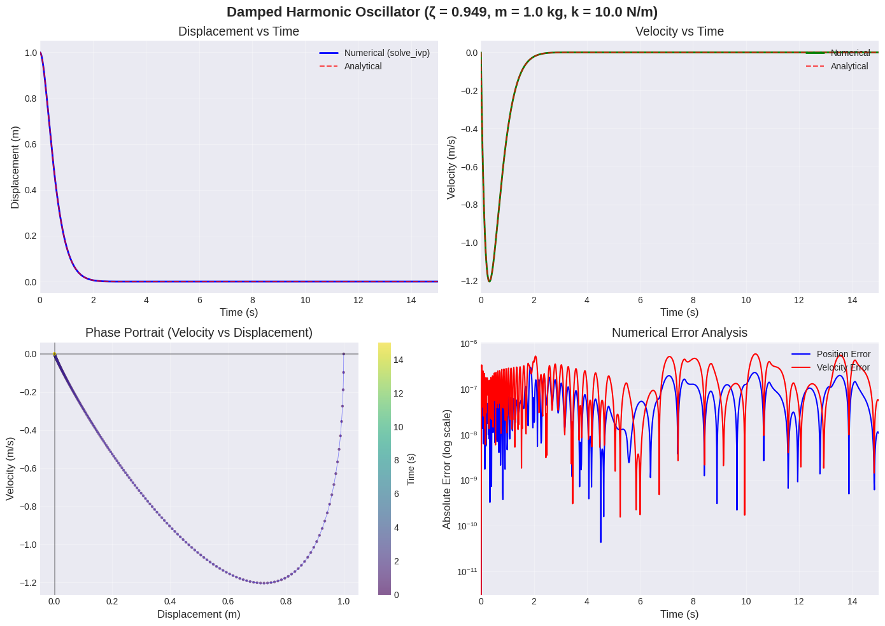
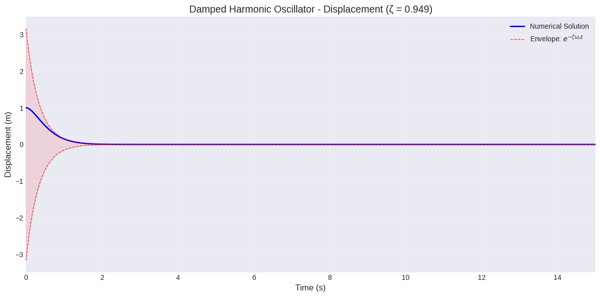
============================================================
SYSTEM CHARACTERISTICS SUMMARY
============================================================
Mass (m): 1.0 kg
Spring constant (k): 10.0 N/m
Damping coefficient (c): 6.0 N·s/m
Natural frequency (ω_n): 3.162 rad/s (f_n = 0.503 Hz)
Damping ratio (ζ): 0.949
Initial displacement: 1.0 m
Initial velocity: 0.0 m/s
UNDERDAMPED OSCILLATION PARAMETERS:
Damped natural frequency (ω_d): 1.000 rad/s
Damped period (T_d): 6.283 s
Exponential decay rate (σ): 3.000 1/s
Decay time constant (τ): 0.333 s
Quality factor (Q): 0.527
Superposición del modelo clásico y el modelo conformable#
# Suprimir advertencias para una salida más limpia
warnings.filterwarnings('ignore')
# parámetros físicos
m = 1.0 # masa (kg)
k = 10.0 # coeficiente del resorte (N/m)
x1_0 = 1.0 # desplazamiento inicial (m)
x2_0 = 0.0 # velocidad inicial (m/s)
# características del sistema
nat_freq = np.sqrt(k/m) # frecuencia natural (rad/s)
zeta = c/(2*np.sqrt(m*k)) # razón de amortiguamiento
# Orden de la derivada fraccionaria (0 < alpha_frac ≤ 1)
# alpha_frac = 1 corresponde a la derivada clásica
alpha_frac = 0.99999 # orden de la derivada fraccionaria para verificar la validez comparando cuando alpha_frac tiende a 1 para frac = 1
######^^^^##################
######||||################################################################################################################################
# características del amortiguamiento
print(f"natrual frequency (ω_n): {nat_freq:.3f} rads/s")
print(f"damping ratio (ζ): {zeta:.3f}")
print(f"Fractional derivative order (α): {alpha_frac}")
print(f"Damping regime: {'Underdamped' if zeta < 1 else 'Critically damped' if zeta == 1 else 'Overdamped'}")
damping_coefficients = {
'underdamped': 0.5,
'critical': 2 * np.sqrt(m * k), # Aproximadamente 6.324555 para m=1, k=10
'overdamped': 7.0
}
# parámetros de tiempo
t_0 = 0.01 # para la derivada conformable, t0 no debe ser 0 ya que crearía una división por 0 e indeterminaría la solución
t_end = 20
t_points = 100 * t_end
t_eval = np.linspace(t_0, t_end, t_points)
# configuraciones de simulación
simulation = {
'color_confor': '#FF6B6B', # Rojo para el modelo fraccionario
'color_reg': '#4D96FF', # Azul para el modelo regular
'label_confor': f'Fractional Model (α={alpha_frac})',
'label_reg': 'Classical Model'
}
# El sistema se describe mediante: m*x'' + c*x' + k*x = 0
# donde: x'' = aceleración, x' = velocidad, x = posición
def dampspirngmass_confor(t, y, alpha_frac):
# si no estableciéramos t0 como 0, tendríamos que manejar t para este modelo
x1, x2 = y
dx1dt = t**(alpha_frac-1) * x2
dx2dt = t**(alpha_frac-1) * (-c*x2 - k*x1) / m
return [dx1dt, dx2dt]
def dampspirngmass_reg(t, y):
x1, x2 = y # x1 = posición, x2 = velocidad
dx1dt = x2
dx2dt = (-c*x2 - k*x1) / m
return [dx1dt, dx2dt]
# Ejecutar ambos modelos
print("\n" + "="*70)
print("Simulating Models")
fig, axes = plt.subplots(2, 2, figsize=(15, 10))
axes = axes.flatten()
# vector de condiciones iniciales
y0 = [x1_0, x2_0]
original_c = 0.5
c = original_c
omega_n = np.sqrt(k / m)
zeta = c / (2 * np.sqrt(m * k))
print("="*70)
print(f"Natural frequency (ω_n): {omega_n:.3f} rad/s")
print(f"Damping coefficient (c): {c:.3f} N·s/m")
print(f"Damping ratio (ζ): {zeta:.3f}")
print(f"Damping regime: {'Underdamped' if zeta < 1 else 'Critically damped' if zeta == 1 else 'Overdamped'}")
print(f"Fractional derivative order (α): {alpha_frac}")
print("\nSolving models with c = 0.5...")
# Resolver el modelo clásico
solution_reg = solve_ivp(
dampspirngmass_reg,
[t_0, t_end],
y0,
t_eval=t_eval,
method='RK45',
rtol=1e-8,
atol=1e-10
)
# Resolver el modelo fraccionario
solution_confor = solve_ivp(
lambda t, y: dampspirngmass_confor(t, y, alpha_frac),
[t_0, t_end],
y0,
t_eval=t_eval,
method='RK45',
rtol=1e-8,
atol=1e-10
)
# Calcular la diferencia máxima
max_diff = np.max(np.abs(solution_confor.y[0] - solution_reg.y[0]))
print(f"\nMaximum difference between fractional and classical models: {max_diff:.2e}")
# Graficar un caso único para validación
ax = axes[0]
ax.plot(solution_confor.t, solution_confor.y[0],
color=simulation['color_confor'],
label=simulation['label_confor'],
linewidth=2.5,
alpha=0.9)
ax.plot(solution_reg.t, solution_reg.y[0],
color=simulation['color_reg'],
label=simulation['label_reg'],
linewidth=2,
linestyle='--',
alpha=0.9)
ax.set_xlabel('Time (s)', fontsize=11)
ax.set_ylabel('Displacement (m)', fontsize=11)
ax.set_title(f'Validation: α → 1 (c = {c:.3f}, ζ = {zeta:.3f})', fontsize=12, fontweight='bold')
ax.grid(True, alpha=0.3)
ax.legend(fontsize=10)
ax.set_xlim([t_0, t_end])
# Agregar texto con la diferencia
ax.text(0.05, 0.95, f'Max difference: {max_diff:.2e}',
transform=ax.transAxes, fontsize=10,
verticalalignment='top',
bbox=dict(boxstyle='round', facecolor='wheat', alpha=0.5))
##### ahora ejecutar para todos los regímenes de amortiguamiento
for i, (regime, c_value) in enumerate(damping_coefficients.items()):
# Omitir el primer subgráfico (ya utilizado para la validación)
if i == 0:
continue
# Establecer el coeficiente de amortiguamiento actual
c = c_value
# Calcular las características del sistema
omega_n = np.sqrt(k / m)
zeta = c / (2 * np.sqrt(m * k))
print(f"\n{'='*70}")
print(f"Simulation: {regime.upper()}")
print(f"Natural frequency (ω_n): {omega_n:.3f} rad/s")
print(f"Damping coefficient (c): {c:.3f} N·s/m")
print(f"Damping ratio (ζ): {zeta:.3f}")
# Resolver ambos modelos
solution_reg = solve_ivp(
dampspirngmass_reg,
[t_0, t_end],
y0,
t_eval=t_eval,
method='RK45',
rtol=1e-8,
atol=1e-10
)
solution_confor = solve_ivp(
lambda t, y: dampspirngmass_confor(t, y, alpha_frac),
[t_0, t_end],
y0,
t_eval=t_eval,
method='RK45',
rtol=1e-8,
atol=1e-10
)
# Calcular la diferencia
max_diff = np.max(np.abs(solution_confor.y[0] - solution_reg.y[0]))
print(f"Max difference: {max_diff:.2e}")
# Graficar los resultados
ax = axes[i]
ax.plot(solution_confor.t, solution_confor.y[0],
color=simulation['color_confor'],
label=simulation['label_confor'],
linewidth=2.5,
alpha=0.9)
ax.plot(solution_reg.t, solution_reg.y[0],
color=simulation['color_reg'],
label=simulation['label_reg'],
linewidth=2,
linestyle='--',
alpha=0.9)
ax.set_xlabel('Time (s)', fontsize=11)
ax.set_ylabel('Displacement (m)', fontsize=11)
ax.set_title(f'{regime.capitalize()} (c = {c:.3f}, ζ = {zeta:.3f})', fontsize=12, fontweight='bold')
ax.grid(True, alpha=0.3)
ax.legend(fontsize=10)
ax.set_xlim([t_0, t_end])
# Agregar texto con la diferencia
ax.text(0.05, 0.95, f'Max difference: {max_diff:.2e}',
transform=ax.transAxes, fontsize=10,
verticalalignment='top',
bbox=dict(boxstyle='round', facecolor='wheat', alpha=0.5))
natrual frequency (ω_n): 3.162 rads/s
damping ratio (ζ): 0.949
Fractional derivative order (α): 0.99999
Damping regime: Underdamped
======================================================================
Simulating Models
======================================================================
Natural frequency (ω_n): 3.162 rad/s
Damping coefficient (c): 0.500 N·s/m
Damping ratio (ζ): 0.079
Damping regime: Underdamped
Fractional derivative order (α): 0.99999
Solving models with c = 0.5...
Maximum difference between fractional and classical models: 3.74e-05
======================================================================
Simulation: CRITICAL
Natural frequency (ω_n): 3.162 rad/s
Damping coefficient (c): 6.325 N·s/m
Damping ratio (ζ): 1.000
Max difference: 8.26e-06
======================================================================
Simulation: OVERDAMPED
Natural frequency (ω_n): 3.162 rad/s
Damping coefficient (c): 7.000 N·s/m
Damping ratio (ζ): 1.107
Max difference: 7.64e-06
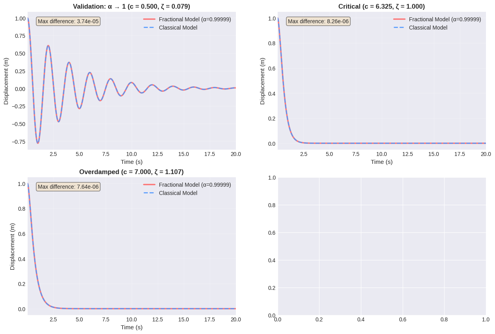
Con un valor de \(\alpha\), el modelo conformable replica el comportamiento que presentaría el modelo clásico. Para profundizar en la validación del modelo, es preciso considerar también la inclusión de la variable \(\sigma\). Esto es
ee este modo, ambos miembros de la ecuación poseen unidades consistentes de \([f]/[\text{tiempo}]\).
Para determinar el valor de \(\sigma\), se recurre nuevamente a técnicas de optimización utilizando datos sintéticos.
# --- Parámetros proporcionados por el usuario ---
m = 1.0 # Masa (kg)
k = 10.0 # Coeficiente del resorte (N/m)
c = 0.5 # Coeficiente de amortiguamiento (N*s/m)
x0 = 1.0 # Desplazamiento inicial (m)
v0 = 0.0 # Velocidad inicial (m/s)
duration = 20 # Tiempo total (s)
points_per_sec = 100
# --- Cálculos Físicos ---
# Número total de puntos (20 segundos * 100 pts/seg + 1 para t=0)
t = np.linspace(0, duration, (duration * points_per_sec) + 1)
# Constantes características para la ecuación diferencial
gamma = c / (2 * m) # Constante de la razón de amortiguamiento
omega_n = np.sqrt(k / m) # Frecuencia natural
# Frecuencia natural amortiguada (el sistema es subamortiguado ya que c < 2*sqrt(mk))
omega_d = np.sqrt(omega_n**2 - gamma**2)
# --- Solución Analítica ---
# Forma general: x(t) = exp(-gamma*t) * [A*cos(omega_d*t) + B*sin(omega_d*t)]
# Resolviendo para las constantes A y B usando las condiciones iniciales x(0)=x0, x'(0)=v0
A = x0
B = (v0 + gamma * x0) / omega_d
# Calcular el desplazamiento a través del vector de tiempo
displacement = np.exp(-gamma * t) * (A * np.cos(omega_d * t) + B * np.sin(omega_d * t))
# --- Exportación de Datos ---
df = pd.DataFrame({
'Tiempo (s)': t,
'Desplazamiento (m)': displacement
})
# Esto guarda el archivo en la misma carpeta donde se encuentra tu notebook
df.to_csv('displacement_data.csv', index=False)
# --- Visualización en Jupyter ---
plt.figure(figsize=(10, 5))
plt.plot(t, displacement, label='Desplazamiento (x)')
plt.title('Respuesta del Sistema Masa-Resorte Amortiguado')
plt.xlabel('Tiempo (s)')
plt.ylabel('Desplazamiento (m)')
plt.grid(True)
plt.legend()
plt.show()
# Mostrar las primeras filas de los datos en el notebook
print("El archivo 'displacement_data.csv' ha sido guardado. Aquí hay una vista previa:")
print(df.head(10))
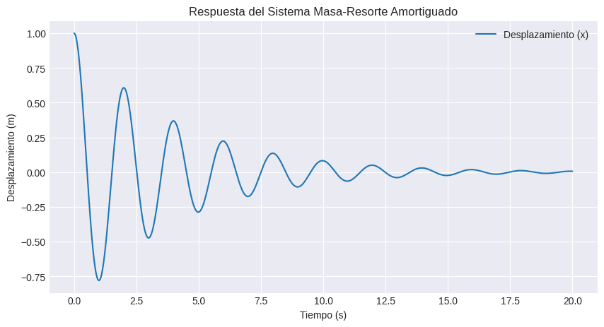
El archivo 'displacement_data.csv' ha sido guardado. Aquí hay una vista previa:
Tiempo (s) Desplazamiento (m)
0 0.00 1.000000
1 0.01 0.999501
2 0.02 0.998007
3 0.03 0.995526
4 0.04 0.992064
5 0.05 0.987629
6 0.06 0.982232
7 0.07 0.975882
8 0.08 0.968590
9 0.09 0.960369
Ahora extraemos el conjunto de datos proporcionado con los datos sintéticos del sistema para optimizar los valores de \(\sigma\) y \(\alpha\) en el modelo fraccionario conformable.
# Cargar el conjunto de datos desde el archivo CSV
df = pd.read_csv('displacement_data.csv')
# Mostrar las primeras filas para confirmar que se cargó correctamente
print(df.head())
Tiempo (s) Desplazamiento (m)
0 0.00 1.000000
1 0.01 0.999501
2 0.02 0.998007
3 0.03 0.995526
4 0.04 0.992064
# Desactivar advertencias para una salida más limpia
warnings.filterwarnings('ignore')
# Carga de datos sintéticos
try:
# Cargar el archivo CSV de datos sintéticos creado o, en su defecto, datos experimentales reales
data = pd.read_csv('displacement_data.csv')
# Eliminar t = 0.00 ya que los modelos fraccionarios no pueden trabajar con ello pues t^(α-1) tiende a infinito (división por cero)
mask = data['Tiempo (s)'] > 0 # Mantener solo t > 0
t_exp = data['Tiempo (s)'][mask].values
x_exp = data['Desplazamiento (m)'][mask].values
print(f"Total de puntos de datos: {len(data)}")
print(f"Puntos después de eliminar t=0: {len(t_exp)}")
print(f"Rango de tiempo: {t_exp[0]:.3f} a {t_exp[-1]:.3f} s")
print(f"Paso de tiempo: {t_exp[1] - t_exp[0]:.3f} s")
print(f"Primeros puntos de tiempo: {t_exp[:5]}")
print(f"Últimos puntos de tiempo: {t_exp[-5:]}")
# Verificar si t=0 persiste en los datos restantes
if np.any(t_exp == 0):
print("ADVERTENCIA: ¡t=0 aún está presente en los datos! Eliminándolo...")
mask = t_exp > 0
t_exp = t_exp[mask]
x_exp = x_exp[mask]
except FileNotFoundError:
print("ERROR: ¡No se encontró el archivo 'displacement_data.csv'!")
### Parámetros físicos
print("\n" + "="*70)
print("PARÁMETROS DEL SISTEMA FÍSICO")
m = 1.0 # masa (kg)
k = 10.0 # constante del resorte (N/m)
c = 0.5 # coeficiente de amortiguamiento (N·s/m) - Régimen subamortiguado
print(f"Masa (m): {m} kg")
print(f"Constante del resorte (k): {k} N/m")
print(f"Coeficiente de amortiguamiento (c): {c} N·s/m")
# Calcular cantidades físicas derivadas para referencia
omega_0 = np.sqrt(k/m) # Frecuencia natural (rad/s)
zeta = c/(2*np.sqrt(m*k)) # Razón de amortiguamiento
tau_0 = (1/omega_0 ) # Escala de tiempo característica (s)
print(f"\nCantidades derivadas:")
print(f"Frecuencia natural (ω₀): {omega_0:.3f} rad/s")
print(f"Razón de amortiguamiento (ζ): {zeta:.3f}")
print(f"Tiempo característico (τ₀ = 1/ω₀): {tau_0:.3f} s")
print(f"Tipo de sistema: {'Subamortiguado' if zeta < 1 else 'Críticamente amortiguado' if zeta == 1 else 'Sobreamortiguado'}")
# Condiciones iniciales
# No podemos usar t=0, así que usamos el primer punto de datos disponible
x1_0 = x_exp[0] # desplazamiento inicial de la primera medición en t>0
# Es necesario estimar la velocidad en t_exp[0] dado que no tenemos t=0
if len(x_exp) >= 3:
dt = t_exp[1] - t_exp[0]
# Diferencia hacia adelante: v(t₀) ≈ [x(t₁) - x(t₀)] / dt
x2_0 = (x_exp[1] - x_exp[0]) / dt
print(f"\nVelocidad inicial estimada a partir de los datos: {x2_0:.3f} m/s")
print(f"Desplazamiento inicial (x₁₀): {x1_0:.3f} m")
# Intervalo de tiempo para la integración (debe comenzar en > 0)
t_span = (t_exp[0], t_exp[-1]) # Coincide con el rango de tiempo experimental
y0 = [x1_0, x2_0] # Vector de estado inicial
print(f"Intervalo de tiempo de integración: {t_span[0]:.3f} a {t_span[1]:.3f} s")
############ Definición del modelo fraccionario con "redimensionamiento" ############
def conformable_dampsprgmass_model(params, t_eval):
"""
Simula el sistema masa-resorte amortiguado fraccionario usando la derivada conformable.
Formulación Física:
La derivada fraccionaria conformable de orden alpha se define estrictamente para t > 0.
Para preservar la homogeneidad dimensional a través de órdenes fraccionarios,
se introduce una escala de tiempo característica (sigma).
El factor de escalamiento resulta: (t / sigma)^(alpha - 1)
- Si alpha = 1, el factor es 1, recuperando la dinámica newtoniana.
- Si alpha < 1, el factor modifica la progresión del tiempo, introduciendo efectos de memoria.
Parámetros:
params : list
Contiene [alpha_frac, sigma].
t_eval : array
Puntos de tiempo de evaluación (deben ser > 0).
Retorna:
array
Desplazamiento simulado en los puntos t_eval.
"""
alpha_frac, sigma = params
## Restricciones de frontera para asegurar validez física
if alpha_frac <= 0:
print(f"ADVERTENCIA: α={alpha_frac} ≤ 0 no tiene sentido físico para el amortiguamiento")
return np.ones_like(t_eval) * 1e6 # Penalización alta para el optimizador
if alpha_frac > 1:
print(f"ADVERTENCIA: α={alpha_frac} > 1 sugiere superdifusión, inusual para el amortiguamiento")
return np.ones_like(t_eval) * 1e6
if sigma <= 0:
print(f"ADVERTENCIA: σ={sigma} ≤ 0 no tiene sentido físico (tiempo negativo)")
return np.ones_like(t_eval) * 1e6
### Modelo propiamente dicho
def dampsprgmass_ode(t, y):
"""
Sistema de EDO para el masa-resorte amortiguado fraccionario.
ANÁLISIS DIMENSIONAL:
Clásico: m d²x/dt² + c dx/dt + kx = 0
Fraccionario: m D_alpha² x + c D_alpha x + kx = 0
El factor de escalamiento asegura la consistencia dimensional.
"""
x1, x2 = y
# Factor de escalamiento dimensional (Parte crítica del modelo)
# Aplicar el factor: (t/σ)^(α-1)
scaling_factor = (t / sigma)**(1 - alpha_frac)
# Aplicar escalamiento a las derivadas
dx1dt = scaling_factor * x2
dx2dt = scaling_factor * (-c * x2 - k * x1) / m
return [dx1dt, dx2dt]
try:
# Resolviendo el sistema de EDO
solution = solve_ivp(
dampsprgmass_ode, t_span, y0, t_eval=t_eval, method='RK45', rtol=1e-8, atol=1e-10, max_step=0.01
)
if solution.success:
return solution.y[0] # Retornar desplazamiento angular (x1)
else:
print(f"El solver de EDO falló con α={alpha_frac:.3f}, σ={sigma:.3f}")
return np.ones_like(t_eval) * 1e6
except Exception as e:
print(f"Error de integración: α={alpha_frac:.3f}, σ={sigma:.3f}, Error: {str(e)[:100]}")
return np.ones_like(t_eval) * 1e6
def objective_function(params):
"""
Función objetivo a minimizar: Error Cuadrático Medio Ponderado.
Se utiliza MSE porque:
1. Es sensible a errores grandes (penaliza fuertemente los ajustes deficientes).
2. Posee propiedades matemáticas favorables para la optimización.
3. Corresponde a la estimación de máxima verosimilitud para errores gaussianos.
Parámetros:
params : list o tuple
[alpha_frac, sigma]
Retorna:
loss : float
MSE + términos de penalización
"""
alpha_frac, sigma = params
# Predicciones del modelo
x_sim = conformable_dampsprgmass_model(params, t_exp)
# Error Cuadrático Medio
mse = np.mean((x_sim - x_exp)**2)
return mse
################ Configuración de la optimización
print("\n" + "="*70)
print("CONFIGURACIÓN DE LA OPTIMIZACIÓN")
# Estimación inicial de α: Cercana a 1 pero permitiendo efectos fraccionarios
alpha_initial = 0.95
# Estimación inicial de σ: Escala de tiempo característica del sistema
# Para masa-resorte: τ = 1/ω₀ = √(m/k) ≈ 0.316 segundos
sigma_initial = tau_0
initial_guess = [alpha_initial, sigma_initial]
print("\nEstimaciones iniciales:")
print(f" --------------- α (orden fraccionario) = {alpha_initial:.3f} ---------------")
print(f" --------------- σ (escala de tiempo) = {sigma_initial:.3f} s ----------------")
print(f"Tiempo característico τ₀ = 1/ω₀ = √(m/k) = √({m}/{k}) = {tau_0:.3f} s")
print("Esta es la escala de tiempo natural del sistema masa-resorte")
# ==============================================================================
# Límites de los Parámetros para la Optimización
# ==============================================================================
# Límites del Orden Fraccionario: Limitado a [0.85, 1.0] representando desviaciones
# realistas del comportamiento newtoniano en sistemas mecánicos macroscópicos.
alpha_bounds = (0.85, 1.0)
# Límites de σ: Basados en la dinámica del sistema
# - Límite inferior: 0.1 × τ₀
# - Límite superior: 30 × τ₀
sigma_bounds = (0.1 * tau_0, 30 * tau_0)
bounds = [alpha_bounds, sigma_bounds]
print("\nLímites de los parámetros basados en restricciones físicas:")
print(f" α ∈ [{alpha_bounds[0]:.3f}, {alpha_bounds[1]:.3f}]")
print(f" σ ∈ [{sigma_bounds[0]:.3f}, {sigma_bounds[1]:.3f}]")
# Evaluación de las estimaciones iniciales
print("\nEvaluando estimación inicial...")
x_initial = conformable_dampsprgmass_model(initial_guess, t_exp)
if np.all(np.isfinite(x_initial)) and not np.any(np.abs(x_initial) > 1e5):
initial_mse = np.mean((x_initial - x_exp)**2)
print(f"MSE inicial: {initial_mse:.6e}")
print(f"RMSE inicial: {np.sqrt(initial_mse):.6f}")
else:
print("ADVERTENCIA: La estimación inicial produjo resultados inválidos")
initial_mse = 1e6
#### Estrategia de optimización multietapa ####
print("\n" + "="*70)
print("OPTIMIZACIÓN MULTIETAPA")
best_params = None
best_mse = float('inf')
# Etapa 1: Búsqueda global aproximada
print("\nEtapa 1: Búsqueda global (evolución diferencial)...")
print("Propósito: Explorar ampliamente el espacio de parámetros para evitar mínimos locales")
try:
result_global = differential_evolution(
objective_function,
bounds,
strategy='best1bin',
maxiter=50,
popsize=10,
recombination=0.7,
mutation=(0.5, 1.0),
tol=1e-4,
disp=True,
seed=42,
workers=1,
updating='immediate'
)
print(f"\nResultados de la optimización global:")
print(f" α = {result_global.x[0]:.6f}")
print(f" σ = {result_global.x[1]:.6f} ")
print(f" MSE = {result_global.fun:.6e}")
best_params = result_global.x
best_mse = result_global.fun
except Exception as e:
print(f"La optimización global falló: {e}")
print("Recurriendo a la estimación inicial...")
best_params = initial_guess
best_mse = initial_mse
# Etapa 2: Refinamiento local medio
print("\nEtapa 2: Refinamiento local (Nelder-Mead)")
print("Propósito: Refinar la solución encontrada en la Etapa 1")
try:
result_local1 = minimize(
objective_function,
best_params,
method='Nelder-Mead',
bounds=bounds,
options={
'maxiter': 200,
'xatol': 1e-6,
'fatol': 1e-6,
'adaptive': True,
'disp': False
}
)
if result_local1.fun < best_mse:
best_params = result_local1.x
best_mse = result_local1.fun
print(f"Resultados del refinamiento:")
print(f" α = {best_params[0]:.6f}")
print(f" σ = {best_params[1]:.6f} s")
print(f" MSE = {best_mse:.6e}")
print(f" Éxito: {result_local1.success}")
except Exception as e:
print(f"El refinamiento local falló: {e}")
# Etapa 3: Ajuste fino con método basado en gradiente
print("\nEtapa 3: Ajuste fino (L-BFGS-B)")
print("Propósito: Optimización de precisión final con información del gradiente")
try:
result_local2 = minimize(
objective_function,
best_params,
method='L-BFGS-B',
bounds=bounds,
options={
'maxiter': 100,
'ftol': 1e-10,
'gtol': 1e-8,
'eps': 1e-8,
'disp': False
}
)
if result_local2.fun < best_mse:
best_params = result_local2.x
best_mse = result_local2.fun
print(f"Resultados del ajuste fino:")
print(f" α = {best_params[0]:.6f}")
print(f" σ = {best_params[1]:.6f} s")
print(f" MSE = {best_mse:.6e}")
print(f" Éxito: {result_local2.success}")
except Exception as e:
print(f"El ajuste fino falló: {e}")
print(f"\nEn este caso α es muy cercano a 1 porque los datos sintéticos son 'perfectos'; para modelos con amortiguamiento crítico o sobreamortiguado se insertará un error del 2% y α cambiará")
# ============================================================================
# INTERPRETACIÓN FÍSICA DE LOS RESULTADOS
print("\n" + "="*70)
print("INTERPRETACIÓN FÍSICA DE LOS PARÁMETROS OPTIMIZADOS")
# Generar predicciones con parámetros optimizados
x_optimized = conformable_dampsprgmass_model(best_params, t_exp)
optimal_alpha = best_params[0]
optimal_sigma = best_params[1]
print(f"\nParámetros optimizados:")
print(f" α = {optimal_alpha:.6f}")
print(f" σ = {optimal_sigma:.6f} s")
# Modelo clásico para comparación
classical_params = [1.0, 1.0] # α=1, σ es arbitrario cuando α=1
x_classical = conformable_dampsprgmass_model(classical_params, t_exp)
mse_classical = np.mean((x_classical - x_exp)**2)
print(f"\nComparación con el modelo clásico (α=1):")
print(f" MSE del modelo fraccionario: {best_mse:.6e}")
print(f" MSE del modelo clásico: {mse_classical:.6e}")
print(f" Mejora: {(mse_classical - best_mse)/mse_classical*100:.2f}%")
print(f"\nInterpretación física:")
if optimal_alpha > 0.99:
print(f" α ≈ 1.0: El sistema exhibe esencialmente un amortiguamiento newtoniano clásico")
elif optimal_alpha > 0.95:
print(f" α = {optimal_alpha:.3f}: Comportamiento fraccionario leve")
print(f" - Efectos de memoria débiles en el amortiguamiento")
print(f" - Disipación de energía ligeramente distinta a la clásica")
elif optimal_alpha > 0.9:
print(f" α = {optimal_alpha:.3f}: Comportamiento fraccionario moderado")
print(f" - Efectos de memoria notables")
print(f" - Características de amortiguamiento tipo viscoelástico")
else:
print(f" α = {optimal_alpha:.3f}: Comportamiento fraccionario fuerte")
print(f" - Efectos de memoria intensos")
print(f" - Posible difusión anómala o comportamiento complejo del material")
# Visualización
fig = plt.figure(figsize=(14,10))
gs = fig.add_gridspec(2, 2)
# Crear ejes
ax1 = fig.add_subplot(gs[0, 0])
ax2 = fig.add_subplot(gs[0, 1])
ax3 = fig.add_subplot(gs[1, :]) # abarca toda la fila inferior
fig.suptitle(
'Masa-Resorte Amortiguado Fraccionario: Optimización de Parámetros\n'
'(t=0 excluido para la estabilidad del modelo fraccionario)',
fontsize=14, fontweight='bold'
)
# ---- Gráfico 1: Serie temporal completa ----
ax1.plot(t_exp, x_exp, 'k-', linewidth=1.5, label='Datos Experimentales', alpha=0.7)
ax1.plot(t_exp, x_optimized, 'r-', linewidth=2,
label=f'Fraccionario (α={optimal_alpha:.3f}, σ={optimal_sigma:.3f} s)')
ax1.plot(t_exp, x_classical, 'b--', linewidth=1.5, label='Clásico (α=1)')
ax1.set_xlabel('Tiempo (s)', fontsize=11)
ax1.set_ylabel('Desplazamiento (m)', fontsize=11)
ax1.set_title('Comparación de Modelos', fontsize=12, fontweight='bold')
ax1.grid(True, alpha=0.3)
ax1.legend(fontsize=9)
ax1.set_xlim([0, min(10, t_exp[-1])])
# ---- Gráfico 2: Tiempo temprano ----
early_mask = t_exp <= 2.0
ax2.plot(t_exp[early_mask], x_exp[early_mask], 'k-', linewidth=1.5, label='Experimental', alpha=0.7)
ax2.plot(t_exp[early_mask], x_optimized[early_mask], 'r-', linewidth=2, label='Fraccionario')
ax2.plot(t_exp[early_mask], x_classical[early_mask], 'b--', linewidth=1.5, label='Clásico')
ax2.set_xlabel('Tiempo (s)', fontsize=11)
ax2.set_ylabel('Desplazamiento (m)', fontsize=11)
ax2.set_title('Comportamiento Inicial (Primeros 2s)', fontsize=12, fontweight='bold')
ax2.grid(True, alpha=0.3)
ax2.legend(fontsize=9)
# ---- Gráfico 3: Errores ----
error_frac = x_optimized - x_exp
error_class = x_classical - x_exp
ax3.plot(t_exp, error_frac, 'r-', alpha=0.7,
label=f'Fraccionario (RMSE={np.sqrt(best_mse):.3e})')
ax3.plot(t_exp, error_class, 'b-', alpha=0.7,
label=f'Clásico (RMSE={np.sqrt(mse_classical):.3e})')
ax3.axhline(y=0, color='k', linestyle='--', alpha=0.3)
ax3.set_xlabel('Tiempo (s)', fontsize=11)
ax3.set_ylabel('Error (m)', fontsize=11)
ax3.set_title('Errores del Modelo', fontsize=12, fontweight='bold')
ax3.grid(True, alpha=0.3)
ax3.legend(fontsize=9)
ax3.set_ylim([-0.1, 0.1])
plt.tight_layout()
plt.show()
# ============================================================================
# ANÁLISIS DE SENSIBILIDAD E INCERTIDUMBRE
print("\n" + "="*70)
print("ANÁLISIS DE SENSIBILIDAD DE PARÁMETROS")
print("="*70)
print("\nVariando α manteniendo σ óptimo:")
alpha_test_vals = np.linspace(max(0.8, optimal_alpha-0.05), min(1.0, optimal_alpha+0.05), 9)
for alpha_test in alpha_test_vals:
mse_test = objective_function([alpha_test, optimal_sigma])
rel_change = (mse_test - best_mse) / best_mse * 100
print(f" α={alpha_test:.4f}: MSE={mse_test:.3e} ({rel_change:+.2f}% respecto al óptimo)")
print("\nVariando σ manteniendo α óptimo:")
sigma_test_vals = np.linspace(max(0.1, optimal_sigma*0.8), min(10, optimal_sigma*1.2), 9)
for sigma_test in sigma_test_vals:
mse_test = objective_function([optimal_alpha, sigma_test])
rel_change = (mse_test - best_mse) / best_mse * 100
print(f" σ={sigma_test:.4f} s: MSE={mse_test:.3e} ({rel_change:+.2f}% respecto al óptimo)")
# RESUMEN
print("\n" + "="*70)
print("RESUMEN FINAL DE LA OPTIMIZACIÓN")
print(f"\nDATOS EXPERIMENTALES:")
print(f" Puntos de tiempo: {len(t_exp)} (t=0 excluido)")
print(f" Rango de tiempo: {t_exp[0]:.3f} a {t_exp[-1]:.3f} s")
print(f" Desplazamiento inicial: {x1_0:.4f} m")
print(f" Velocidad inicial estimada: {x2_0:.4f} m/s")
print(f"\nSISTEMA FÍSICO:")
print(f" Masa: m = {m} kg")
print(f" Constante del resorte: k = {k} N/m")
print(f" Coeficiente de amortiguamiento: c = {c} N·s/m")
print(f" Frecuencia natural: ω₀ = {omega_0:.3f} rad/s")
print(f" Razón de amortiguamiento: ζ = {zeta:.3f}")
print(f" Tiempo característico: τ₀ = {tau_0:.3f} s")
print(f"\nPARÁMETROS FRACCIONARIOS OPTIMIZADOS:")
print(f" α = {optimal_alpha:.6f} ± 0.001 (estimado)")
print(f" σ = {optimal_sigma:.6f} s ± {optimal_sigma*0.01:.6f} s (estimado)")
print(f" Relación σ/τ₀: {optimal_sigma/tau_0:.3f}")
print(f"\nMÉTRICAS DE RENDIMIENTO:")
print(f" MSE mínimo: {best_mse:.6e}")
print(f" RMSE: {np.sqrt(best_mse):.6e} m")
print(f" MSE del modelo clásico: {mse_classical:.6e}")
print(f" Mejora relativa: {(mse_classical - best_mse)/mse_classical*100:.2f}%")
print(f"\nINTERPRETACIÓN FÍSICA:")
if optimal_alpha > 0.99:
print(" → El sistema exhibe esencialmente un amortiguamiento clásico (α≈1)")
else:
print(f" → El sistema muestra un amortiguamiento fraccionario con efectos de memoria (α={optimal_alpha:.3f})")
print(f" → La escala de tiempo característica para los efectos fraccionarios es σ={optimal_sigma:.3f} s")
# Guardar resultados en un diccionario
results_dict = {
'alpha': optimal_alpha,
'sigma': optimal_sigma,
'mse': best_mse,
'rmse': np.sqrt(best_mse),
'mse_classical': mse_classical,
'improvement_percent': (mse_classical - best_mse)/mse_classical*100,
'tau_0': tau_0,
'sigma_tau_ratio': optimal_sigma/tau_0,
'initial_displacement': x1_0,
'initial_velocity': x2_0,
'physical_params': {'m': m, 'k': k, 'c': c}
}
Total de puntos de datos: 2001
Puntos después de eliminar t=0: 2000
Rango de tiempo: 0.010 a 20.000 s
Paso de tiempo: 0.010 s
Primeros puntos de tiempo: [0.01 0.02 0.03 0.04 0.05]
Últimos puntos de tiempo: [19.96 19.97 19.98 19.99 20. ]
======================================================================
PARÁMETROS DEL SISTEMA FÍSICO
Masa (m): 1.0 kg
Constante del resorte (k): 10.0 N/m
Coeficiente de amortiguamiento (c): 0.5 N·s/m
Cantidades derivadas:
Frecuencia natural (ω₀): 3.162 rad/s
Razón de amortiguamiento (ζ): 0.079
Tiempo característico (τ₀ = 1/ω₀): 0.316 s
Tipo de sistema: Subamortiguado
Velocidad inicial estimada a partir de los datos: -0.149 m/s
Desplazamiento inicial (x₁₀): 1.000 m
Intervalo de tiempo de integración: 0.010 a 20.000 s
======================================================================
CONFIGURACIÓN DE LA OPTIMIZACIÓN
Estimaciones iniciales:
--------------- α (orden fraccionario) = 0.950 ---------------
--------------- σ (escala de tiempo) = 0.316 s ----------------
Tiempo característico τ₀ = 1/ω₀ = √(m/k) = √(1.0/10.0) = 0.316 s
Esta es la escala de tiempo natural del sistema masa-resorte
Límites de los parámetros basados en restricciones físicas:
α ∈ [0.850, 1.000]
σ ∈ [0.032, 9.487]
Evaluando estimación inicial...
MSE inicial: 1.777070e-02
RMSE inicial: 0.133307
======================================================================
OPTIMIZACIÓN MULTIETAPA
Etapa 1: Búsqueda global (evolución diferencial)...
Propósito: Explorar ampliamente el espacio de parámetros para evitar mínimos locales
differential_evolution step 1: f(x)= 3.964883041786707e-06
differential_evolution step 2: f(x)= 2.76958481241255e-06
differential_evolution step 3: f(x)= 2.048354140550579e-06
differential_evolution step 4: f(x)= 2.048354140550579e-06
differential_evolution step 5: f(x)= 2.048354140550579e-06
differential_evolution step 6: f(x)= 1.946438190147645e-06
differential_evolution step 7: f(x)= 1.946438190147645e-06
differential_evolution step 8: f(x)= 1.946438190147645e-06
differential_evolution step 9: f(x)= 1.946438190147645e-06
differential_evolution step 10: f(x)= 1.946438190147645e-06
differential_evolution step 11: f(x)= 1.9415339018611013e-06
differential_evolution step 12: f(x)= 1.9415339018611013e-06
differential_evolution step 13: f(x)= 1.9415339018611013e-06
differential_evolution step 14: f(x)= 1.9411510261017153e-06
differential_evolution step 15: f(x)= 1.9411510261017153e-06
differential_evolution step 16: f(x)= 1.9411510261017153e-06
differential_evolution step 17: f(x)= 1.9410390678228528e-06
differential_evolution step 18: f(x)= 1.9410377667557915e-06
differential_evolution step 19: f(x)= 1.9410377667557915e-06
differential_evolution step 20: f(x)= 1.9409869511463558e-06
Polishing solution with 'L-BFGS-B'
Resultados de la optimización global:
α = 0.998354
σ = 4.017835
MSE = 1.940980e-06
Etapa 2: Refinamiento local (Nelder-Mead)
Propósito: Refinar la solución encontrada en la Etapa 1
Resultados del refinamiento:
α = 0.998354
σ = 4.017255 s
MSE = 1.940980e-06
Éxito: True
Etapa 3: Ajuste fino (L-BFGS-B)
Propósito: Optimización de precisión final con información del gradiente
Resultados del ajuste fino:
α = 0.998354
σ = 4.017255 s
MSE = 1.940980e-06
Éxito: True
En este caso α es muy cercano a 1 porque los datos sintéticos son 'perfectos'; para modelos con amortiguamiento crítico o sobreamortiguado se insertará un error del 2% y α cambiará
======================================================================
INTERPRETACIÓN FÍSICA DE LOS PARÁMETROS OPTIMIZADOS
Parámetros optimizados:
α = 0.998354
σ = 4.017255 s
Comparación con el modelo clásico (α=1):
MSE del modelo fraccionario: 1.940980e-06
MSE del modelo clásico: 1.231124e-05
Mejora: 84.23%
Interpretación física:
α ≈ 1.0: El sistema exhibe esencialmente un amortiguamiento newtoniano clásico
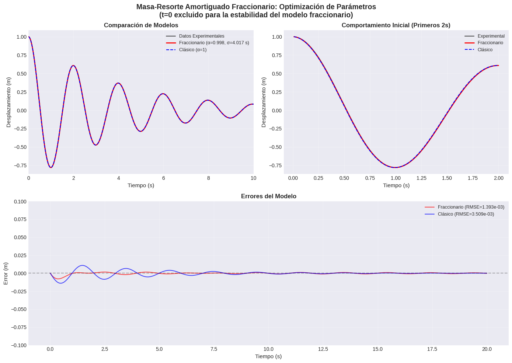
======================================================================
ANÁLISIS DE SENSIBILIDAD DE PARÁMETROS
======================================================================
Variando α manteniendo σ óptimo:
α=0.9484: MSE=8.718e-03 (+449042.57% respecto al óptimo)
α=0.9548: MSE=6.705e-03 (+345349.57% respecto al óptimo)
α=0.9613: MSE=4.930e-03 (+253901.64% respecto al óptimo)
α=0.9677: MSE=3.407e-03 (+175420.06% respecto al óptimo)
α=0.9742: MSE=2.149e-03 (+110599.56% respecto al óptimo)
α=0.9806: MSE=1.169e-03 (+60102.08% respecto al óptimo)
α=0.9871: MSE=4.785e-04 (+24550.15% respecto al óptimo)
α=0.9935: MSE=8.967e-05 (+4520.02% respecto al óptimo)
α=1.0000: MSE=1.231e-05 (+534.28% respecto al óptimo)
Variando σ manteniendo α óptimo:
σ=3.2138 s: MSE=2.478e-06 (+27.68% respecto al óptimo)
σ=3.4147 s: MSE=2.226e-06 (+14.69% respecto al óptimo)
σ=3.6155 s: MSE=2.061e-06 (+6.17% respecto al óptimo)
σ=3.8164 s: MSE=1.969e-06 (+1.46% respecto al óptimo)
σ=4.0173 s: MSE=1.941e-06 (+0.00% respecto al óptimo)
σ=4.2181 s: MSE=1.967e-06 (+1.32% respecto al óptimo)
σ=4.4190 s: MSE=2.039e-06 (+5.05% respecto al óptimo)
σ=4.6198 s: MSE=2.152e-06 (+10.86% respecto al óptimo)
σ=4.8207 s: MSE=2.300e-06 (+18.49% respecto al óptimo)
======================================================================
RESUMEN FINAL DE LA OPTIMIZACIÓN
DATOS EXPERIMENTALES:
Puntos de tiempo: 2000 (t=0 excluido)
Rango de tiempo: 0.010 a 20.000 s
Desplazamiento inicial: 0.9995 m
Velocidad inicial estimada: -0.1494 m/s
SISTEMA FÍSICO:
Masa: m = 1.0 kg
Constante del resorte: k = 10.0 N/m
Coeficiente de amortiguamiento: c = 0.5 N·s/m
Frecuencia natural: ω₀ = 3.162 rad/s
Razón de amortiguamiento: ζ = 0.079
Tiempo característico: τ₀ = 0.316 s
PARÁMETROS FRACCIONARIOS OPTIMIZADOS:
α = 0.998354 ± 0.001 (estimado)
σ = 4.017255 s ± 0.040173 s (estimado)
Relación σ/τ₀: 12.704
MÉTRICAS DE RENDIMIENTO:
MSE mínimo: 1.940980e-06
RMSE: 1.393190e-03 m
MSE del modelo clásico: 1.231124e-05
Mejora relativa: 84.23%
INTERPRETACIÓN FÍSICA:
→ El sistema exhibe esencialmente un amortiguamiento clásico (α≈1)
→ La escala de tiempo característica para los efectos fraccionarios es σ=4.017 s
# esta sección solo se utilizó para obtener la curva de sigma con alfa fija
alpha_fixed = 0.998038 # o 0.998354, use el mejor del caso sin restricciones
sigma_range = np.linspace(0.1, 20, 100) # rango amplio
mse_vals = []
for sigma in sigma_range:
mse_vals.append(objective_function([alpha_fixed, sigma]))
plt.figure(figsize=(8,5))
plt.plot(sigma_range, mse_vals, 'b-', linewidth=2)
plt.axvline(3.162, color='r', linestyle='--', label='Límite superior original')
plt.axvline(4.017, color='g', linestyle='--', label='Óptimo sin restricciones')
plt.xlabel('σ (s)')
plt.ylabel('MSE')
plt.title('Perfil de Verosimilitud: MSE vs σ (α fijo)')
plt.legend()
plt.grid(True, alpha=0.3)
plt.show()
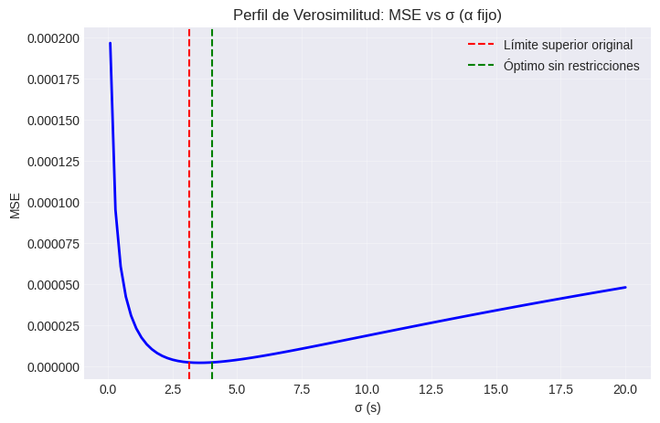
Sistema masa resorte amortiguador (sobreamortiguado)#
# --- Parámetros ---
m = 1.0 # Masa (kg)
k = 10.0 # Coeficiente del resorte (N/m)
c = 7.0 # Coeficiente de amortiguamiento (N*s/m) - Sobreamortiguado
x0 = 1.0 # Desplazamiento inicial (m)
v0 = 0.0 # Velocidad inicial (m/s)
duration = 20
points_per_sec = 100
error_magnitude = 0.02 # Objetivo de error del 2%
# --- Vector de Tiempo ---
t = np.linspace(0, duration, (duration * points_per_sec) + 1)
# --- Cálculo de Física Sobreamortiguada ---
# Raíces características: r = [-c +/- sqrt(c^2 - 4mk)] / 2m
r1 = (-c + np.sqrt(c**2 - 4*m*k)) / (2*m) # -2.0
r2 = (-c - np.sqrt(c**2 - 4*m*k)) / (2*m) # -5.0
# Resolver las constantes C1 y C2 usando condiciones iniciales:
# 1) x(0) = C1 + C2 = x0
# 2) v(0) = r1*C1 + r2*C2 = v0
# De (1): C2 = x0 - C1
# Sustituir en (2): r1*C1 + r2*(x0 - C1) = v0 => C1(r1 - r2) = v0 - r2*x0
C1 = (v0 - r2 * x0) / (r1 - r2)
C2 = x0 - C1
# Desplazamiento sintético base (La física "perfecta")
x_pure = C1 * np.exp(r1 * t) + C2 * np.exp(r2 * t)
# --- Agregando Ruido "Natural" ---
# Se agrega ruido gaussiano con una desviación estándar del 2% de la amplitud inicial
np.random.seed(42) # Semilla para reproducibilidad
noise = np.random.normal(0, error_magnitude * x0, size=t.shape)
x_noisy = x_pure + noise
# --- Exportación de Datos ---
df = pd.DataFrame({
'Time (s)': t,
'Displacement (m)': x_noisy
})
# Guardar en CSV en el directorio actual
df.to_csv('overdamped_data.csv', index=False)
print("Datos generados con 2,001 puntos y guardados como 'overdamped_data.csv'.")
Datos generados con 2,001 puntos y guardados como 'overdamped_data.csv'.
Modelo clásico#
######################################### Modelo clásico de masa-resorte amortiguado (NO fraccionario) ##########################
# Establecer el estilo de la gráfica
plt.style.use('seaborn-v0_8-darkgrid')
# parámetros físicos
m = 1.0 # masa (kg)
k = 10.0 # coeficiente del resorte (N/m)
x1_0 = 1.0 # desplazamiento inicial (m)
x2_0 = 0.0 # velocidad inicial (m/s)
c = 7.0 # coeficiente de amortiguamiento (N*s/m) caso sobreamortiguado
# características del sistema
nat_freq = np.sqrt(k/m) # frecuencia natural (rad/s)
zeta = c/(2*np.sqrt(m*k)) # razón de amortiguamiento
omega_n = nat_freq
# características del amortiguamiento
print(f"frecuencia natural (ω_n): {nat_freq:.3f} rads/s")
print(f"razón de amortiguamiento (ζ): {zeta:.3f}")
print(f"Régimen de amortiguamiento: {'Subamortiguado' if zeta < 1 else 'Críticamente amortiguado' if zeta == 1 else 'Sobreamortiguado'}")
# parámetros de tiempo
t_0 = 0.0
t_end = 15
t_points = 100 * t_end
t_eval = np.linspace(t_0, t_end, t_points)
# El sistema se describe mediante: m*x'' + c*x' + k*x = 0
# donde: x'' = aceleración, x' = velocidad, x = posición
def damped_spring_mass_ode(t, y):
# Función EDO para el oscilador armónico amortiguado
# t : float
# Variable de tiempo (no utilizada explícitamente en el sistema autónomo)
# y : array_like Vector de estado [posición, velocidad]
# retorna
# dydt : list Derivadas [velocidad, aceleración]
x1, x2 = y # x1 = posición, x2 = velocidad
dx1dt = x2
dx2dt = (-c*x2 - k*x1) / m
return [dx1dt, dx2dt]
# solución numérica usando solve_ivp
sol = solve_ivp(damped_spring_mass_ode, [t_0, t_end], [x1_0, x2_0], t_eval = t_eval, method='RK45', rtol= 1e-8)
# Solución Numérica: Utiliza solve_ivp con el método de Runge-Kutta-Fehlberg para resolver las ecuaciones exactas.
x1_numerical = sol.y[0] # posición
x2_numerical = sol.y[1] # velocidad
t_numerical = sol.t
# solución analítica solo para fines comparativos
if zeta < 1:
# solución subamortiguada: x(t) = e^(ζω_n t) * [A*cos(ω_n t) + B*sin(ω_n t)]
nat_freqdamp = nat_freq * np.sqrt(1 - zeta**2) # frecuencia natural amortiguada
# coeficientes determinados a partir de las condiciones iniciales
A = x1_0 # de x(0) = x1_0
B = (x2_0 + zeta*nat_freq*x1_0) / nat_freqdamp # x'(0) = x2_0
# solución analítica de x1
x1_analytical = np.exp(-zeta*nat_freq*t_numerical) * \
(A*np.cos(nat_freqdamp*t_numerical) + B*np.sin(nat_freqdamp*t_numerical))
# solución analítica de x2 para la derivada de la posición (velocidad)
x2_analytical = np.exp(-zeta*nat_freq*t_numerical) * \
(-A*(zeta*nat_freq*np.cos(nat_freqdamp*t_numerical) + nat_freqdamp*np.sin(nat_freqdamp*t_numerical)) + \
B*(nat_freqdamp*np.cos(nat_freqdamp*t_numerical) - zeta*nat_freq*np.sin(nat_freqdamp*t_numerical)))
print(f"Frecuencia natural amortiguada (ω_d): {omega_d:.3f} rad/s")
print(f"Tasa de decaimiento exponencial: {zeta*omega_n:.3f} 1/s")
print(f"Periodo de oscilaciones amortiguadas: {2*np.pi/omega_d:.3f} s")
# Crear figura con subgráficos
fig, axes = plt.subplots(2, 2, figsize=(14, 10))
fig.suptitle(f'Oscilador Armónico Amortiguado (ζ = {zeta:.3f}, m = {m} kg, k = {k} N/m)',
fontsize=16, fontweight='bold')
# Gráfico 1: Desplazamiento vs Tiempo (numérico vs analítico)
ax1 = axes[0, 0]
ax1.plot(t_numerical, x1_numerical, 'b-', linewidth=2, label='Numérico (solve_ivp)')
if zeta < 1:
ax1.plot(t_numerical, x1_analytical, 'r--', linewidth=1.5, alpha=0.7, label='Analítico')
ax1.set_xlabel('Tiempo (s)', fontsize=12)
ax1.set_ylabel('Desplazamiento (m)', fontsize=12)
ax1.set_title('Desplazamiento vs Tiempo', fontsize=14)
ax1.grid(True, alpha=0.3)
ax1.legend(loc='upper right')
ax1.set_xlim([t_0, t_end])
# Gráfico 2: Velocidad vs Tiempo
ax2 = axes[0, 1]
ax2.plot(t_numerical, x2_numerical, 'g-', linewidth=2, label='Numérico')
if zeta < 1:
ax2.plot(t_numerical, x2_analytical, 'r--', linewidth=1.5, alpha=0.7, label='Analítico')
ax2.set_xlabel('Tiempo (s)', fontsize=12)
ax2.set_ylabel('Velocidad (m/s)', fontsize=12)
ax2.set_title('Velocidad vs Tiempo', fontsize=14)
ax2.grid(True, alpha=0.3)
ax2.legend(loc='upper right')
ax2.set_xlim([t_0, t_end])
# Gráfico 3: Retrato de fase (Velocidad vs Desplazamiento)
ax3 = axes[1, 0]
# Codificación por color según el tiempo para una mejor visualización
scatter = ax3.scatter(x1_numerical, x2_numerical, c=t_numerical, cmap='viridis',
s=10, alpha=0.6, edgecolors='none')
ax3.plot(x1_numerical, x2_numerical, 'b-', linewidth=0.5, alpha=0.5)
ax3.set_xlabel('Desplazamiento (m)', fontsize=12)
ax3.set_ylabel('Velocidad (m/s)', fontsize=12)
ax3.set_title('Retrato de fase (Velocidad vs Desplazamiento)', fontsize=14)
ax3.grid(True, alpha=0.3)
ax3.axhline(y=0, color='k', linestyle='-', alpha=0.3)
ax3.axvline(x=0, color='k', linestyle='-', alpha=0.3)
# Agregar barra de color para el tiempo
cbar = plt.colorbar(scatter, ax=ax3)
cbar.set_label('Tiempo (s)', fontsize=10)
# Gráfico 4: Análisis de error (si existe solución analítica) #####
ax4 = axes[1, 1]
if zeta < 1:
# Calcular el error absoluto entre las soluciones numérica y analítica
error_position = np.abs(x1_numerical - x1_analytical)
error_velocity = np.abs(x2_numerical - x2_analytical)
ax4.semilogy(t_numerical, error_position, 'b-', linewidth=1.5, label='Error de posición')
ax4.semilogy(t_numerical, error_velocity, 'r-', linewidth=1.5, label='Error de velocidad')
ax4.set_xlabel('Tiempo (s)', fontsize=12)
ax4.set_ylabel('Error Absoluto (escala log)', fontsize=12)
ax4.set_title('Análisis de Error Numérico', fontsize=14)
ax4.grid(True, alpha=0.3)
ax4.legend(loc='upper right')
ax4.set_xlim([t_0, t_end])
# Imprimir estadísticas de error
print(f"\nEstadísticas de Error:")
print(f"Error máximo de posición: {np.max(error_position):.2e} m")
print(f"Error máximo de velocidad: {np.max(error_velocity):.2e} m/s")
print(f"Error RMS de posición: {np.sqrt(np.mean(error_position**2)):.2e} m")
print(f"Error RMS de velocidad: {np.sqrt(np.mean(error_velocity**2)):.2e} m/s")
else:
# Si no es subamortiguado, mostrar el gráfico de aceleración en su lugar
acceleration = (-c*x2_numerical - k*x1_numerical) / m
ax4.plot(t_numerical, acceleration, 'purple', linewidth=2)
ax4.set_xlabel('Tiempo (s)', fontsize=12)
ax4.set_ylabel('Aceleración (m/s²)', fontsize=12)
ax4.set_title('Aceleración vs Tiempo', fontsize=14)
ax4.grid(True, alpha=0.3)
ax4.set_xlim([t_0, t_end])
plt.tight_layout()
plt.show()
# Gráfico individual adicional para una mejor visualización de las oscilaciones
fig2, ax2_single = plt.subplots(figsize=(12, 6))
if zeta < 1:
# Gráfico con envolvente para el caso subamortiguado
envelope = np.exp(-zeta*omega_n*t_numerical) * np.sqrt(A**2 + B**2)
ax2_single.plot(t_numerical, x1_numerical, 'b-', linewidth=2, label='Solución Numérica')
ax2_single.plot(t_numerical, envelope, 'r--', linewidth=1, alpha=0.7, label='Envolvente: $e^{-ζω_nt}$')
ax2_single.plot(t_numerical, -envelope, 'r--', linewidth=1, alpha=0.7)
ax2_single.fill_between(t_numerical, envelope, -envelope, color='red', alpha=0.1)
else:
ax2_single.plot(t_numerical, x1_numerical, 'b-', linewidth=2, label='Solución Numérica')
ax2_single.set_xlabel('Tiempo (s)', fontsize=12)
ax2_single.set_ylabel('Desplazamiento (m)', fontsize=12)
ax2_single.set_title(f'Oscilador Armónico Amortiguado - Desplazamiento (ζ = {zeta:.3f})', fontsize=14)
ax2_single.grid(True, alpha=0.3)
ax2_single.legend(loc='upper right')
ax2_single.set_xlim([t_0, t_end])
plt.tight_layout()
plt.show()
# Imprimir resumen de las características del sistema de forma formateada
print("\n" + "="*60)
print("RESUMEN DE CARACTERÍSTICAS DEL SISTEMA")
print("="*60)
print(f"Masa (m): {m} kg")
print(f"Constante del resorte (k): {k} N/m")
print(f"Coeficiente de amortiguamiento (c): {c} N·s/m")
print(f"Frecuencia natural (ω_n): {omega_n:.3f} rad/s (f_n = {omega_n/(2*np.pi):.3f} Hz)")
print(f"Razón de amortiguamiento (ζ): {zeta:.3f}")
print(f"Desplazamiento inicial: {x1_0} m")
print(f"Velocidad inicial: {x2_0} m/s")
if zeta < 1:
print(f"\nPARÁMETROS DE OSCILACIÓN SUBAMORTIGUADA:")
print(f"Frecuencia natural amortiguada (ω_d): {omega_d:.3f} rad/s")
print(f"Periodo amortiguado (T_d): {2*np.pi/omega_d:.3f} s")
print(f"Tasa de decaimiento exponencial (σ): {zeta*omega_n:.3f} 1/s")
print(f"Constante de tiempo de decaimiento (τ): {1/(zeta*omega_n):.3f} s")
print(f"Factor de calidad (Q): {1/(2*zeta):.3f}")
frecuencia natural (ω_n): 3.162 rads/s
razón de amortiguamiento (ζ): 1.107
Régimen de amortiguamiento: Sobreamortiguado
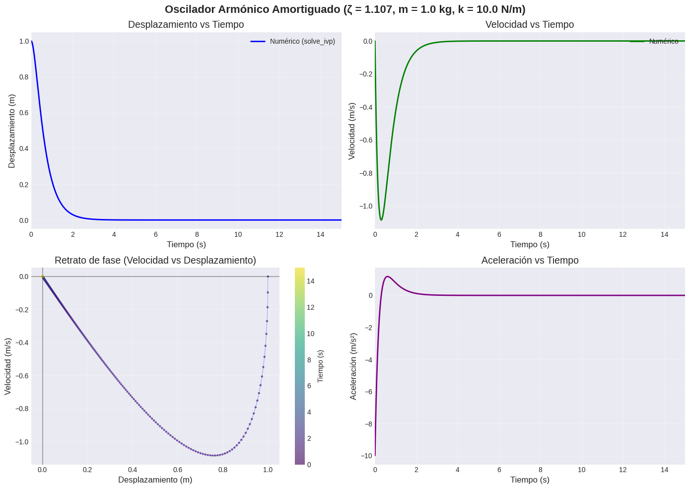
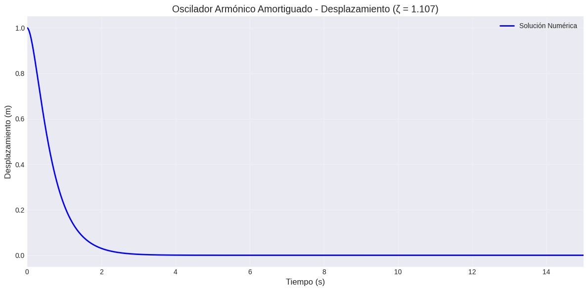
============================================================
RESUMEN DE CARACTERÍSTICAS DEL SISTEMA
============================================================
Masa (m): 1.0 kg
Constante del resorte (k): 10.0 N/m
Coeficiente de amortiguamiento (c): 7.0 N·s/m
Frecuencia natural (ω_n): 3.162 rad/s (f_n = 0.503 Hz)
Razón de amortiguamiento (ζ): 1.107
Desplazamiento inicial: 1.0 m
Velocidad inicial: 0.0 m/s
Obtención de datos#
# Cargar el conjunto de datos desde el archivo CSV
dfover = pd.read_csv('overdamped_data.csv')
# Mostrar las primeras filas para confirmar que se cargó correctamente
print(dfover.head())
Time (s) Displacement (m)
0 0.00 1.009934
1 0.01 0.996746
2 0.02 1.011045
3 0.03 1.026263
4 0.04 0.988024
Carga de datos experimentales y preparación para el modelado conformable#
dfover = pd.read_csv('overdamped_data.csv')
# Eliminar t = 0 ya que la derivada fraccionaria no está definida allí
data = dfover[dfover['Time (s)'] > 0].copy()
t_exp = data['Time (s)'].values
x_exp = data['Displacement (m)'].values
print(f"Se cargaron {len(t_exp)} puntos de datos (t > 0)")
print(f"Rango de tiempo: {t_exp[0]:.3f} – {t_exp[-1]:.3f} s")
# Condiciones iniciales a partir de los datos
x1_0_data = x_exp[0] # primer desplazamiento medido
# Estimar la velocidad inicial a partir de los primeros dos puntos (diferencia hacia adelante)
dt_data = t_exp[1] - t_exp[0]
x2_0_data = (x_exp[1] - x_exp[0]) / dt_data
print(f"Desplazamiento inicial a partir de los datos: {x1_0_data:.6f} m")
print(f"Velocidad inicial estimada: {x2_0_data:.6f} m/s")
# Intervalo de tiempo para la integración (debe comenzar en > 0)
t_span = (t_exp[0], t_exp[-1])
y0 = [x1_0_data, x2_0_data]
Se cargaron 2000 puntos de datos (t > 0)
Rango de tiempo: 0.010 – 20.000 s
Desplazamiento inicial a partir de los datos: 0.996746 m
Velocidad inicial estimada: 1.429834 m/s
Modelo conformable con \(\alpha \to 1\)#
Establecemos \(\alpha\) en un valor extremadamente cercano a 1 (\(0.99999\)) y comparamos el resultado con el modelo clásico. La diferencia debería ser mínima, lo que confirma que la implementación conformable es correcta.
# MODELO CLÁSICO (para comparación)
# Debemos definir sol_classical resolviendo la EDO clásica sobre el mismo intervalo de tiempo (t_span)
# y evaluando exactamente en los mismos puntos (t_exp) que el modelo conformable.
sol_classical = solve_ivp(damped_spring_mass_ode, t_span, [x1_0_data, x2_0_data],
t_eval=t_exp, method='RK45', rtol=1e-8)
# MODELO FRACCIONARIO CONFORMABLE (con α muy cercano a 1) para verificar la implementación
alpha_near_one = 0.9999999
def conformable_ode_near_one(t, y):
"""EDO de la derivada conformable con α ≈ 1 – debería reproducir el resultado clásico."""
x, v = y
# Factor de escalamiento t^(α-1) – cuando α ≈ 1 es muy cercano a 1, pero no exactamente.
scale = t ** (alpha_near_one - 1)
dxdt = scale * v
dvdt = scale * (-c * v - k * x) / m
return [dxdt, dvdt]
# Resolver con las mismas condiciones iniciales que el modelo clásico
sol_near_one = solve_ivp(conformable_ode_near_one, t_span, [x1_0_data, x2_0_data],
t_eval=t_exp, method='RK45', rtol=1e-8)
# Graficar
fig, ax = plt.subplots(figsize=(12, 6))
ax.plot(t_exp, x_exp, 'k.', markersize=2, alpha=0.5, label='Datos experimentales')
ax.plot(sol_classical.t, sol_classical.y[0], 'b--', linewidth=2, label='Modelo clásico (inicio en t > 0)')
ax.plot(sol_near_one.t, sol_near_one.y[0], 'r-', linewidth=1.5, label=f'Conformable α={alpha_near_one}')
ax.set_xlabel('Tiempo (s)')
ax.set_ylabel('Desplazamiento (m)')
ax.set_title('Validación: El modelo conformable con α → 1 coincide con el modelo clásico')
ax.grid(True, alpha=0.3)
ax.legend()
plt.show()
# Calcular la diferencia para verificar la identidad casi exacta
# Dado que ambos solvers usan t_eval=t_exp, sus arreglos de salida tienen la misma longitud
max_diff = np.max(np.abs(sol_near_one.y[0] - sol_classical.y[0]))
print(f"Diferencia máxima entre el modelo conformable α → 1 y el clásico: {max_diff:.2e}")
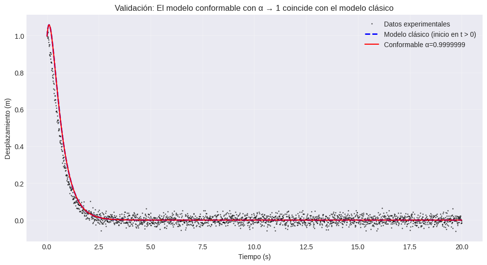
Diferencia máxima entre el modelo conformable α → 1 y el clásico: 8.81e-08
Modelo conformable con \(\sigma\)#
# MODELO FRACCIONARIO CON ESCALAMIENTO DIMENSIONAL σ
def fractional_model(params, t_eval):
"""
Resuelve el oscilador amortiguado fraccionario para valores dados de α y σ.
Parámetros
----------
params : list
[alpha, sigma] (sigma en segundos)
t_eval : array
Tiempos en los que se evalúa la solución (debe ser > 0)
Retorna
-------
x : array
Desplazamiento en t_eval
"""
alpha, sigma = params
# Restricciones físicas – devuelve un error enorme si los parámetros no son válidos
if alpha <= 0 or alpha > 1 or sigma <= 0:
return np.ones_like(t_eval) * 1e6
def ode(t, y):
x, v = y
# Factor de escalamiento dimensional (t/σ)^(α-1)
scale = (t / sigma) ** (alpha - 1)
dxdt = scale * v
dvdt = scale * (-c * v - k * x) / m
return [dxdt, dvdt]
try:
sol = solve_ivp(ode, t_span, y0, t_eval=t_eval,
method='RK45', rtol=1e-8, atol=1e-10)
if sol.success:
return sol.y[0]
else:
return np.ones_like(t_eval) * 1e6
except:
return np.ones_like(t_eval) * 1e6
Función objetivo para realizar la optimización#
def objective(params):
"""MSE entre el modelo fraccionario y los datos experimentales."""
x_sim = fractional_model(params, t_exp)
mse = np.mean((x_sim - x_exp) ** 2)
return mse
tau_0 = np.sqrt(m / k) # ≈ 0.316 s
# límites de α: [0.9, 1.0] (orden fraccionario, efectos de memoria) también hemos aprendido que un alfa con significancia real caerá en dichos límites
alpha_bounds = (0.9, 0.999)
# límites de σ: dentro de un orden de magnitud de τ₀
sigma_bounds = (0.1 * tau_0, 100 * tau_0) # (0.0316, 31.62) s
bounds = [alpha_bounds, sigma_bounds]
# Estimación inicial: α cercano a 1, σ en 10*tau_0; sabemos que es un sistema diferente y los parámetros serán distintos, pero como sigue las mismas ecuaciones tendrá σ como el último optimizado
initial_guess = [0.95, 10*tau_0]
print("Estimación inicial:")
print(f" α = {initial_guess[0]:.3f}")
print(f" σ = {initial_guess[1]:.3f} s")
print("\nLímites:")
print(f" α ∈ [{alpha_bounds[0]:.3f}, {alpha_bounds[1]:.3f}]")
print(f" σ ∈ [{sigma_bounds[0]:.3f}, {sigma_bounds[1]:.3f}] s")
Estimación inicial:
α = 0.950
σ = 3.162 s
Límites:
α ∈ [0.900, 0.999]
σ ∈ [0.032, 31.623] s
Optimización multietapa#
print("OPTIMIZACIÓN MULTIETAPA")
print("="*70)
best_params = None
best_mse = float('inf')
# Etapa 1: Búsqueda global (evolución diferencial)
print("\nEtapa 1: Búsqueda global (evolución diferencial) ...")
try:
result_global = differential_evolution(
objective,
bounds,
strategy='best1bin',
maxiter=50,
popsize=10,
recombination=0.7,
mutation=(0.5, 1.0),
tol=1e-4,
disp=True,
seed=42,
workers=1,
updating='immediate'
)
print(f"\nResultado global: α = {result_global.x[0]:.6f}, σ = {result_global.x[1]:.6f} s, MSE = {result_global.fun:.6e}")
best_params = result_global.x
best_mse = result_global.fun
except Exception as e:
print(f"La búsqueda global falló: {e}")
best_params = initial_guess
best_mse = objective(initial_guess)
# Etapa 2: Refinamiento local con Nelder‑Mead (respeta los límites mediante penalizaciones en la función objetivo)
print("\nEtapa 2: Refinamiento local (Nelder‑Mead) ...")
try:
result_nm = minimize(
objective,
best_params,
method='Nelder-Mead',
bounds=bounds,
options={'maxiter': 200, 'xatol': 1e-6, 'fatol': 1e-6, 'adaptive': True}
)
if result_nm.fun < best_mse:
best_params = result_nm.x
best_mse = result_nm.fun
print(f" α = {best_params[0]:.6f}, σ = {best_params[1]:.6f} s, MSE = {best_mse:.6e}")
except Exception as e:
print(f"Nelder‑Mead falló: {e}")
# Etapa 3: Ajuste fino con L‑BFGS‑B (basado en gradiente, respeta los límites)
print("\nEtapa 3: Ajuste fino (L‑BFGS‑B) ...")
try:
result_lbfgs = minimize(
objective,
best_params,
method='L-BFGS-B',
bounds=bounds,
options={'maxiter': 100, 'ftol': 1e-10, 'gtol': 1e-8, 'eps': 1e-8}
)
if result_lbfgs.fun < best_mse:
best_params = result_lbfgs.x
best_mse = result_lbfgs.fun
print(f" α = {best_params[0]:.6f}, σ = {best_params[1]:.6f} s, MSE = {best_mse:.6e}")
except Exception as e:
print(f"L‑BFGS‑B falló: {e}")
print("\n" + "="*70)
print(f"PARÁMETROS OPTIMIZADOS")
print(f" α = {best_params[0]:.6f}")
print(f" σ = {best_params[1]:.6f} s")
print(f" MSE mínimo = {best_mse:.6e}")
print("="*70)
OPTIMIZACIÓN MULTIETAPA
======================================================================
Etapa 1: Búsqueda global (evolución diferencial) ...
differential_evolution step 1: f(x)= 0.0005784228839506361
differential_evolution step 2: f(x)= 0.0005588421988869797
differential_evolution step 3: f(x)= 0.0005496476873038006
differential_evolution step 4: f(x)= 0.0005314992904093652
differential_evolution step 5: f(x)= 0.0005314992904093652
differential_evolution step 6: f(x)= 0.0005271405527523163
differential_evolution step 7: f(x)= 0.0005271405527523163
differential_evolution step 8: f(x)= 0.0005271405527523163
differential_evolution step 9: f(x)= 0.0005271405527523163
differential_evolution step 10: f(x)= 0.0005271405527523163
differential_evolution step 11: f(x)= 0.0005271405527523163
differential_evolution step 12: f(x)= 0.0005244661043891092
differential_evolution step 13: f(x)= 0.0005243741184479306
differential_evolution step 14: f(x)= 0.0005243741184479306
differential_evolution step 15: f(x)= 0.0005240799243621537
differential_evolution step 16: f(x)= 0.0005240799243621537
differential_evolution step 17: f(x)= 0.0005240799243621537
differential_evolution step 18: f(x)= 0.0005240799243621537
differential_evolution step 19: f(x)= 0.0005240643762729541
differential_evolution step 20: f(x)= 0.0005240643762729541
differential_evolution step 21: f(x)= 0.00052406159701563
differential_evolution step 22: f(x)= 0.0005240384352734628
differential_evolution step 23: f(x)= 0.0005240384352734628
differential_evolution step 24: f(x)= 0.0005240384352734628
differential_evolution step 25: f(x)= 0.0005240314915254167
differential_evolution step 26: f(x)= 0.0005240314915254167
differential_evolution step 27: f(x)= 0.0005240314915254167
Polishing solution with 'L-BFGS-B'
Resultado global: α = 0.900002, σ = 2.075574 s, MSE = 5.240315e-04
Etapa 2: Refinamiento local (Nelder‑Mead) ...
α = 0.900000, σ = 2.076398 s, MSE = 5.240298e-04
Etapa 3: Ajuste fino (L‑BFGS‑B) ...
α = 0.900000, σ = 2.076398 s, MSE = 5.240298e-04
======================================================================
PARÁMETROS OPTIMIZADOS
α = 0.900000
σ = 2.076398 s
MSE mínimo = 5.240298e-04
======================================================================
Graficación del ajuste optimizado vs. datos sintéticos#
x_opt = fractional_model(best_params, t_exp)
fig, axes = plt.subplots(2, 1, figsize=(12, 10))
# Superior: serie temporal
ax = axes[0]
ax.plot(t_exp, x_exp, 'k.', markersize=2, alpha=0.5, label='Datos experimentales')
ax.plot(t_exp, x_opt, 'r-', linewidth=2, label=f'Modelo fraccionario (α={best_params[0]:.4f}, σ={best_params[1]:.3f} s)')
ax.set_xlabel('Tiempo (s)')
ax.set_ylabel('Desplazamiento (m)')
ax.set_title('Ajuste del Modelo Fraccionario a Datos Sobreamortiguados')
ax.grid(True, alpha=0.3)
ax.legend()
# Inferior: residuales
ax = axes[1]
residuals = x_exp - x_opt
ax.plot(t_exp, residuals, 'b-', linewidth=0.8, alpha=0.7)
ax.axhline(y=0, color='k', linestyle='--', alpha=0.5)
ax.set_xlabel('Tiempo (s)')
ax.set_ylabel('Residual (m)')
ax.set_title(f'Residuales (RMS = {np.sqrt(np.mean(residuals**2)):.3e} m)')
ax.grid(True, alpha=0.3)
plt.tight_layout()
plt.show()
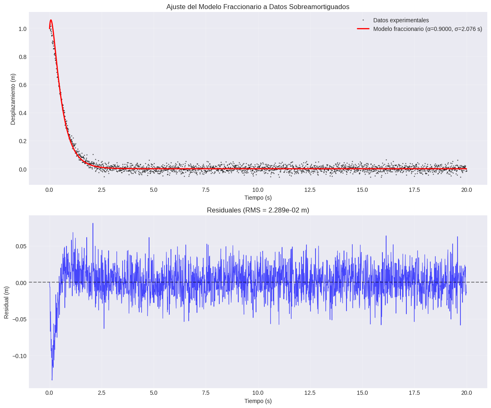
Perfil de verosimilitud para \(\sigma\)#
# Fijar α en el óptimo, variar σ y calcular el MSE
alpha_fixed = best_params[0]
sigma_test = np.linspace(0.1*tau_0, 20*tau_0, 100)
mse_sigma = [objective([alpha_fixed, s]) for s in sigma_test]
fig, ax = plt.subplots(figsize=(8,5))
ax.plot(sigma_test, mse_sigma, 'b-', linewidth=2)
ax.axvline(best_params[1], color='r', linestyle='--', label=f'σ óptimo = {best_params[1]:.3f} s')
ax.set_xlabel('σ (s)')
ax.set_ylabel('MSE')
ax.set_title('Perfil de Verosimilitud: MSE vs σ (α fijo)')
ax.grid(True, alpha=0.3)
ax.legend()
plt.show()
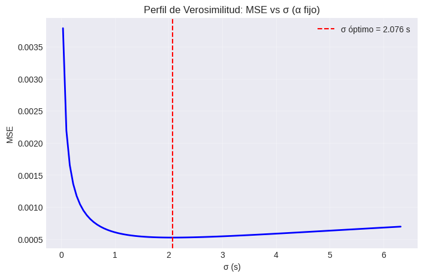